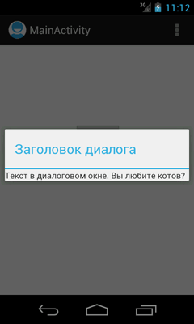
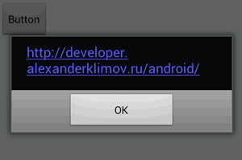
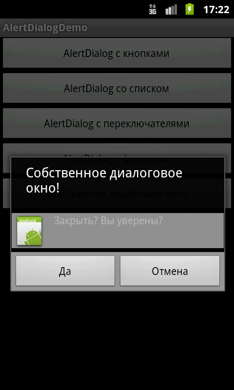

/* Моя кошка замечательно разбирается в программировании. Стоит мне объяснить проблему ей - и все становится ясно. */
John Robbins, Debugging Applications, Microsoft Press, 2000

/* Моя кошка замечательно разбирается в программировании. Стоит мне объяснить проблему ей - и все становится ясно. */
John Robbins, Debugging Applications, Microsoft Press, 2000
Общая информация
Класс Dialog
Диалоговое окно AlertDialog
Создание собственных диалоговых окон
Начиная с Android 3.0, работа с диалоговыми окнами чуть изменилась.
В некоторых случаях требуется показать диалоговое окно, где пользователю нужно сделать какой-нибудь выбор или показать сообщение об ошибке. Безусловно, можно создать собственное окно, расположить в нем нужные кнопки и обрабатывать их нажатия. Но, в Android уже есть собственные встроенные диалоговые окна, которые гибко настраиваются под задачи. Использование диалоговых окон для простых задач позволяет сократить число классов Activity в приложении, экономя ресурсы памяти. Ведь вам не придётся регистрировать активность в манифесте, думать над компоновкой элементов на экране и так далее.
Диалоговые окна в Android представляют собой полупрозрачные «плавающие» активности, частично перекрывающие родительский экран, из которого их вызвали. Как правило, они затеняют родительскую активность позади себя с помощью фильтров размывания или затемнения. Вы можете установить заголовок с помощью метода setTitle() и содержимое с помощью метода setContentView().
Android поддерживает следующие типы диалоговых окон:
Если ни один из существующих типов диалоговых окон вам не подходит, то можете создать свое собственное диалоговое окно.
Класс Dialog является базовым для всех классов диалоговых окон. Поскольку ProgressDialog, TimePickerDialog И DatePickerDialog — расширение класса AlertDialog, они также могут иметь командные кнопки.
Каждое диалоговое окно должно быть определено внутри активности, в которой будет использоваться. Диалоговое окно можно открыть один раз или несколько раз.
Для отображения диалогового окна необходимо вызвать метод showDialog() и передать ему в качестве параметра идентификатор диалога (константа, которую надо объявить в коде программы), который вы хотите отобразить.
Метод dismissDialog() прячет диалоговое окно (но не удаляет), не отображая его на экране. Окно остается в пуле диалоговых окон данной активности. При повторном отображении при помощи метода showDialog() будет использована кэшированная версия окна.
Метод removeDialog() удаляет диалоговое окно из пула окон данной активности. При повторном вызове метода showDialog() диалоговое окно придется создавать снова.
Рассмотрим базовый пример создания диалогового окна на основе класса Dialog. Создайте простейшую разметку для диалогового окна - текстовое поле внутри LinearLayout. В разметку главной активности добавьте кнопку для вызова диалогового окна. В коде для главной активности напишем:
Dialog dialog;
@Override
public void onCreate(Bundle savedInstanceState) {
super.onCreate(savedInstanceState);
setContentView(R.layout.activity_main);
dialog = new Dialog(MainActivity.this);
// Установите заголовок
dialog.setTitle("Заголовок диалога");
// Передайте ссылку на разметку
dialog.setContentView(R.layout.dialog_view);
// Найдите элемент TextView внутри вашей разметки
// и установите ему соответствующий текст
TextView text = (TextView) dialog.findViewById(R.id.dialogTextView);
text.setText("Текст в диалоговом окне. Вы любите котов?");
}
public void onClick(View v)
{
// Выводим диалоговое окно на экран
dialog.show();
}

По умолчанию при показе диалогового окна главная активность затемняется. В документации есть константы, позволяющие управлять степенью затемнения:
WindowManager.LayoutParams lp = dialog.getWindow().getAttributes();
lp.dimAmount = 0.6f; // уровень затемнения от 1.0 до 0.0
dialog.getWindow().setAttributes(lp);
dialog.getWindow().addFlags(WindowManager.LayoutParams.FLAG_DIM_BEHIND);
// Установите заголовок
dialog.setTitle("Заголовок диалога");
...
На эмуляторе я не заметил разницы. В старой версии Android 2.3 был ещё эффект размытия WindowManager.LayoutParams.FLAG_BLUR_BEHIND, который теперь считается устаревшим. Если вы по упрямству всё равно пропишите данный эффект, то получите не эффект размытия, а чёрный фон. Кто знает, может вас устроит данный вариант.
Метод onCreateDialog() вызывается один раз при создании окна. После начального создания при каждом вызове метода showDialog() будет срабатывать обработчик onPrepareDialog(). Переопределив этот метод, вы можете изменять диалоговое окно при каждом его выводе на экран. Это позволит привнести контекст в любое из отображаемых значений. Если требуется перед каждым вызовом диалогового окна изменять его свойства (например, текстовое сообщение или количество кнопок), то можно реализовать внутри этого метода. В этот метод передают идентификатор диалога и сам объект Dialog, который был создан в методе onCreateDialog().
@Override
public void onPrepareDialog(int id, Dialog dialog) {
switch(id) {
case (TIME_DIALOG) :
SimpleDateFormat sdf = new SimpleDateFormat("HH:mm:ss");
Date currentTime = new Date(java.lang.System.currentTimeMillis());
String dateString = sdf.format(currentTime);
AlertDialog timeDialog = (AlertDialog)dialog;
timeDialog.setMessage(dateString);
break;
}
}
Так как в одном приложении может быть несколько диалоговых окон, то необходимо заранее определить диалоговое окно, которое будет использоваться в активности. Для этого создается идентификатор (константа с целым числом). При вызове метода showDialog() вы передаете данный идентификатор диалогового окна в качестве параметра. После этого идет вызов метода onCreateDialog(), который возвращает экземпляр нужного диалогового окна.
Можно создавать диалог без onCreateDialog(), например в обработчике нажатия кнопки вызова диалога, но тогда он не будет присоединен к текущей активности. Чтобы прикрепить его к активности, необходимо вызвать метод setOwnerActivity(), передав ему в качестве параметра текущую активность.
Перейдем к примеру. Если в активности должны вызываться несколько различных диалоговых окон, сначала необходимо определить целочисленный идентификатор для каждого диалога, например:
static final int DIALOG_PAUSED_ID = 0;
static final int DIALOG_GAMEOVER_ID = 1;
Эти идентификаторы потом можно использовать в вызове метода showDialog() и в обработчике события onCreateDialog() в операторе switch:
protected Dialog onCreateDialog(int id) {
Dialog dialog;
switch(id) {
case DIALOG_PAUSED_ID:
// Код для работы с диалогом Пауза
break;
case DIALOG_GAMEOVER_ID:
// Код для работы с диалогом Игра окончена
break;
default:
dialog = null;
}
return dialog;
}
Следует отметить, что методы Activity.onCreateDialog() и Activity.onPrepareDialog() устарели. Используйте DialogFragment.
Примеры создания диалоговых окон типа AlertDialog рассмотрены в этой статье
Практического смысла возможно не имеет, но можно сделать текст сообщения ссылкой.
private void openSiteDialog() {
final SpannableString webaddress = new SpannableString(
"http://developer.alexanderklimov.ru/android/");
Linkify.addLinks(webaddress, Linkify.ALL);
final AlertDialog aboutDialog = new AlertDialog.Builder(
TestActivity.this).setMessage(webaddress)
.setPositiveButton("OK", new DialogInterface.OnClickListener() {
@Override
public void onClick(DialogInterface dialog, int which) {
// TODO Auto-generated method stub
}
}).create();
aboutDialog.show();
((TextView) aboutDialog.findViewById(android.R.id.message))
.setMovementMethod(LinkMovementMethod.getInstance());
}

В базовом пример в начале статьи был показан один способ создания собственной разметки для диалогового окна. Также можно использовать класс LayoutInflater, который позволяет преобразовать XML-разметку в соответствующие объекты View в коде программы.
Сначала необходимо инициализировать объект LayoutInflater при помощи вызова метода getLayoutInflater(), затем получить корневое представление методом inflate(int, ViewGroup), где первый параметр — идентификатор ресурса схемы размещения, второй — идентификатор корневого представления разметки:
LayoutInflater inflater = getLayoutInflater();
View layout = inflater.inflate(R.layout.custom_dialog,
(ViewGroup)findViewById(R.id.toast_layout));
Получив корневое представление, можно методом findViewById() инициализировать все дочерние представления в разметке и задать для них нужное наполнение. Например, если в разметке определены виджеты TextView и ImageView, код может выглядеть так:
TextView text = (TextView)layout.findViewById(R.id.textView);
text.setText("Закрыть? Вы уверены?");
ImageView image = (ImageView)layout.findViewById(R.id.image);
image.setImageResource(R.drawable.icon);
Далее создается объект AlertDialog.Builder и методом setView() для него устанавливается полученная ранее разметка:
builder = new AlertDialog.Builder(this);
builder.setView(layout);
Остальная инициализация свойств диалога и работа с ним в коде программы аналогична работе со стандартным AlertDialog.
